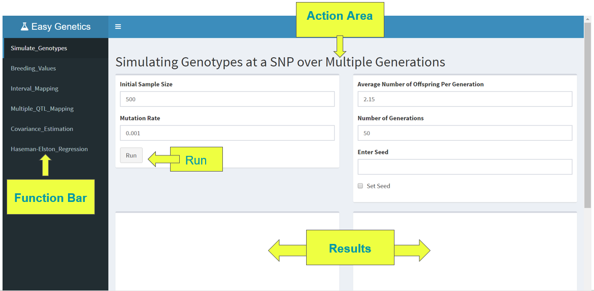
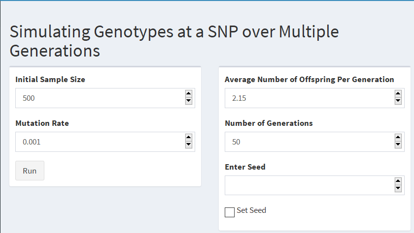
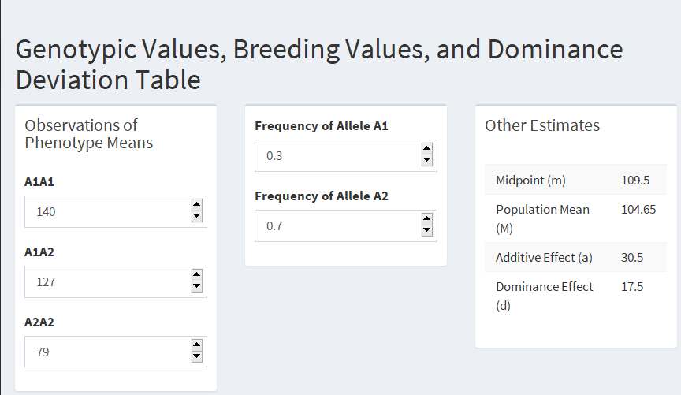
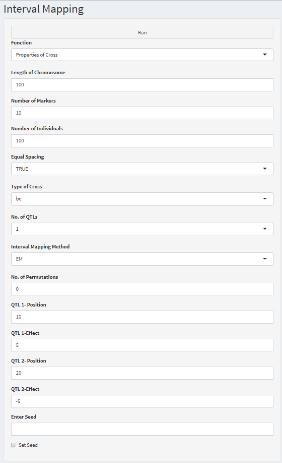

![]()
The downloaded binary packages are in
/var/folders/1j/qb3qtyq94gxfdcs5wx9wt4zr0000gn/T//RtmpIMMGZ8/downloaded_packageseasygenetics
2018-04-24
Navigating through the package
The package is a GUI dimension of basic functions that are used for genetic data analysis
Navigating through the package requires minimal or no coding exposure
In the documentation, we have made sure to present the instructions in a way as easy as possible.
Contents
- Introduction to
easygenetics - Installation
- GitHub
- Posit Connect Cloud
- User Interface
- List of Functions
- Using functions in easygenetics
- Significance of easygenetics
- Additional Details
- Session Info
- Contact Details
Introduction to easygenetics
easygeneticsis a front end genetic data analysis platform in R programming environment- It is a R package, consisting of functions which can be accessed and played with via a graphical interface
- The aim of this package is to create an easily accessible platform for non-statisticians and non-programmers to work on with minimal coding
- The user will have the minimum task of just loading the package and running the required function
- The input variables can be entered in the GUI, and results are available almost instantaneously, which improves the accessibility for non-programmers
Installation
- GitHub
The r package devtools is needed to install the easygenetics package from GitHub
devtools can be installed using
Then the easygenetics package can be installed using install_github() function from devtools package as below:
Installation
- Posit Connect Cloud
The Shiny app can be accessed using the link - easygenetics
The app is made using shiny package in R and hosted on Posit Connect Cloud
User Interface

easygenetics User InterfaceThe Function Bar consists of the index of functions which makes it easier to access when you are using the package
The Action Area allows you to manipulate the parameters and observe and visualize the results parallely
The Results area allows you to visualize the results
The Run button lets you submit your values and observe the results
List of Functions
- Simulating Genotypes at a SNP over Multiple Generations :
Simulate_Genotypes() - Genotypic Values, Breeding Values, and Dominance Deviation Table :
Breeding_Values() - Interval Mapping :
Interval_Mapping() - Multiple QTL Mapping :
Multiple_QTL_Mapping() - Simulating Genotype of Parent by Child- Estimating Covariance :
Covariance_Estimation() - Haseman-Elston Regression :
Haseman-Elston_Regression()
Simulate_Genotypes()
The function located on the first tab titled Simulate_Genotypes() is used to simulate genotypes at a SNP over multiple generations with the assumption that the mutation only happens one way
Input
- The arguments that are required in order for this function to properly run is the initial sample size , mutation rate , average number of offspring per generation and number of generations
- The Enter Seed is a numeric value that allows the results to be reproducible
- All of the required arguments needed in order for the function to work are numeric values
- The initial sample size is the starting population size at the beginning of the simulation
- The mutation rate is the frequency of the target mutation in one gene over time
- The average number of offspring per generation is the mean growth in each generation
Output
- The output of this function produces two plots
- The first plot shows the growth in population size over generation
- The second plot provides the allele frequency over generation
These plots are both determined by the user’s arguments that are defined above.
Simulate_Genotypes()

Simulate_Genotypes()Breeding_Values()
The second tab is titled Breeding_Values(), which calculates values based on the inputted arguments
Input
- The inputs for this function are all numeric
- A1A1 is the number of observations of the phenotypic means of the specified homozygous genotype
- A1A2 is the number of observations of the phenotypic means of the heterozygous genotype, and
- A2A2 is the number of observations of the phenotypic means of the specified homozygous genotype
- The Frequency of Allele A1 is the rate at which allele A1 occurs, and the Frequency of Allele A2 is the rate at which allele A2 occurs
Output
The output of this function provides
- Table that includes midpoint (m) , population mean (M) , additive effect (a) , dominance effect (d)
- Another table with the frequency , genotypic value , breeding value and dominance deviation of each genotype
Breeding_Values()

Breeding_Values()Breeding_Values()
Glossary
Midpointis the middle value of the phenotypic means between the two homozygous genotypesExpected mean phenotypeis calculated using the additive effect and dominance effect , whereadditive effectis the distance between the midpoint and the phenotypic means of the homozygous genotypes, anddominance effectis the distance between the midpoint and phenotypic mean of the heterozygous genotype
Population meanis calculated from theadditive effect,dominance effectand thefrequencies of each genotypeFrequencyis the rate at which each genotype occursGenotypic valueis theadditive effectanddominance effectestimatesBreeding valueis the sum of average effects of the allelesDominance Deviationis the difference between genotypic value and breeding value
Interval_Mapping()
Interval_Mapping() is the function located on the third tab of the app - Interval mapping is currently the most common method used for QTL mapping - Its used by assuming the presence of a single QTL, and estimates the QTL position between two chosen markers after considering each locus one at a time
Input and Output
The Enter Seed is a numeric value that allows the results to be reproducible
Function is a select list input with the options
- Properties of Cross
- Plot
- LOD Thresholds, and
- LOD Intervals
The default in this list is Properties of Cross and the output changes depending on this selection
If Properties of Cross is selected and all the other parameters are entered and selected, the output displays the summary of a data simulation for a QTL experiment. This summary includes information such as the type of cross , number of individuals , number of phenotypes , total markers , percent genotyped and so on
If Plot is selected and all the other parameters are entered and selected, the output displays an interval mapping plot. Depending on what is selected under Interval Mapping Method determines what plot is displayed
If the option LOD Thresholds is selected, the output provides the summary of a genome scan with a single QTL model. This includes the interval mapping threshold that shows which chromosome , position and LOD value where the LOD threshold is located
Selecting LOD Interval under Function produces an output that shows the LOD support interval for the chromosome
Interval_Mapping()
Input and Output
The output described above is determined based on the other parameters that the user provides
This includes the length of chromosome , the number of markers , the number of individuals , the number of permutations , the position of QTL1 and QTL2 and the effect of QTL1 and QTL2 , which are all numeric values
Equal Spacing , Type of Cross , No. of QTLs and Interval Mapping Method are all select list inputs due to the restrictions of the function
- Equal Spacing provides the option of TRUE or FALSE that determines the presence of equal spacing in the genetic map simulation
- Type of Cross specifies what kind of population to simulate, and has the option of
bcwhich stands for backcross andf2for intercross. - The choices for No. of QTLs are
1and2due to function constraints - Interval Mapping method is used to determine which plot is shown. The options for the different methods are
EM,HK,EHKandAll.
Interval_Mapping()

Interval_Mapping()